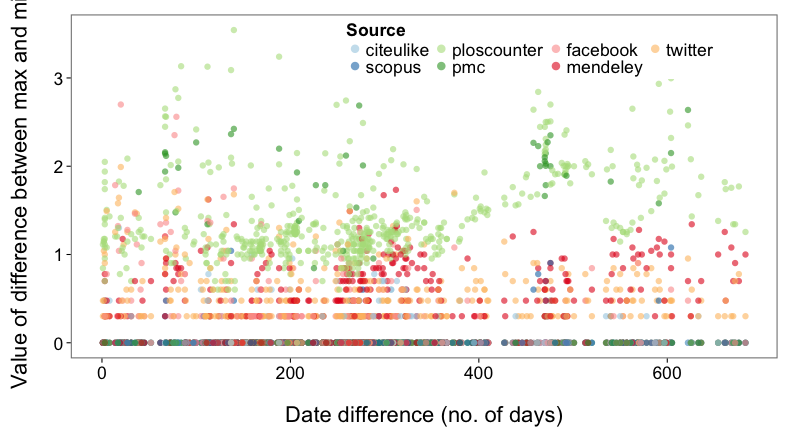

Scott Chamberlain (@recology_)
rOpenSci / Simon Fraser University
Computers are simply better at repetitive tasks
The modern way to serve data to consumers
Makes data consumption easy from any programming language

OAuth makes sense for web workflows, but not so much for programmatic workflows.
Having both options is nice.
RAML - http://raml.org/
Programatically create new clients
#%RAML 0.8
–––
title: World Music API
baseUri: http://example.api.com/{version}
version: v1
/songs:
get:
post:
...
Good place to include altmetrics standards...

| Data source | Libraries | rOpenSci Contributions in R |
|---|---|---|
| PLOS ALM | R | alm ** Copernicus, etc. |
| ImpactStory | R, Javascript | rImpactStory |
| Altmetric | R, Python, Ruby, iOS | rAltmetric |
out <- GET("http://alm.plos.org/api/v3/articles?doi=10.1371/journal.pmed.1001361&key=<key>")
stop_for_status(out)
content(out)
{
doi: "10.1371/journal.pmed.1001361",
title: "Personalized Prediction of Lifetime Benefits with Statin Therapy for Asymptomatic Individuals: A Modeling Study",
url: "http://www.plosmedicine.org/article/info%3Adoi%2F10.1371%2Fjournal.pmed.1001361",
mendeley: "437b07d9-bc40-4c57-b60e-1f60fefe2300",
pmid: "23300388",
pmcid: "3531501",
publication_date: "2012-12-27T08:00:00Z",
update_date: "2013-10-07T11:06:58Z",
views: 9329,
shares: 62,
bookmarks: 5,
citations: 1
}
alm(doi = "10.1371/journal.pone.0029797")
An object of class "almtot"
Slot "meta":
$doi
[1] "10.1371/journal.pone.0029797"
...<more metadata>
Slot "summary":
views shares bookmarks citations
1 29229 237 51 7
Slot "data":
.id pdf html shares groups comments likes citations total
1 bloglines NA NA NA NA NA NA 0 0
2 citeulike NA NA 1 NA NA NA NA 1
3 connotea NA NA NA NA NA NA 0 0
4 crossref NA NA NA NA NA NA 7 7
5 nature NA NA NA NA NA NA 4 4
...
almmeta("mendeley")
$mendeley
$mendeley$desc
[1] "Mendeley is a reference manager and social bookmarking tool. The Mendeley API returns incomplete API responses for articles where they don't have enough information, and we ignore those."
$mendeley$infourl
[1] "https://github.com/articlemetrics/alm/wiki/Mendeley"
$mendeley$authentication
[1] "OAuth 1.0"
$mendeley$apiurl
[1] "http://api.mendeley.com/oapi/documents/details/DOI/?type=doi&consumer_key=API_KEY"
| Data source | PLoS | ImpactStory | Altmetric |
|---|---|---|---|
| WebOfScience | webofscience | -- | -- |
| Dryad | -- | dryad:total_downloads | -- |
| Figshare | figshare | figshare:views shares downloads | -- |
| Github | -- | github:forks stars | -- |
| Google+ | -- | -- | cited by gplus count |
| Mendeley readers | mendeley shares | mendeley readers | mendeley readers |
| topsy:tweets | cited by tweeters count |
metaAlm - (doesn't actually exist)
Combine altmetrics data across providers (ImpactStory, Altmetric, etc.)
and across data sources (Twitter, Facebook, etc.)
plos_data <- alm(<doi>)
impactstory_data <- metrics(<doi>)
altmetric_data <- altmetric_data(altmetrics(<doi>))
alt_combine(plos_data, impactstory_data, altmetric_data)
Warning: Inconsistency in facebookLikes, check metadata
dataSource fromProvider values
1 twitter PLOSALM 100
2 facebookLikes ImpactStory 50
3 facebookLikes Altmetric 40
4 scopusCitations Altmetric 150
Load libraries, get 200 DOIs, get ALM data, plot
library(rplos); library(alm); library(plyr)
dois <- searchplos(terms='*:*', fields="id", limit=200)
alm <- ldply( alm(doi=do.call(c,dois$id), total_details=TRUE) )
plot_density(alm, c("counter_pdf","mendeley_shares","pmc_pdf","pmc_total"), c("#83DFB4","#EFA5A5","#CFD470","#B2C9E4"), plot_type="h")

library(rplos); library(alm); library(rCharts)
dois <- c('10.1371/journal.pone.0001543','10.1371/journal.pone.0040117','10.1371/journal.pone.0029797','10.1371/journal.pone.0039395')
dat <- signposts(doi=dois)
plot_signposts(input = dat, type = "multiBarChart", height = 400)
“I’d argue that #opendata today is exactly where open source was some 2 decades ago”-@BenBalter http://t.co/VJ6QiLybUU #oss
— Alex Howard (@digiphile) October 9, 2013
Altmetrics needs checks on
Altmetrics needs checks on
Open data makes all this easier
Are individual altmetrics consistent among data providers?
